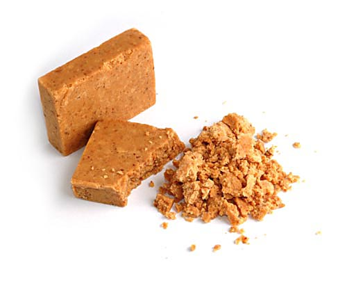

The Old Shelf / Brazil / Paçoca
Paçoca
Brazil
Paçoca
not dated
One Brazilian sweet with a clean photo. Bandeirinhas, pião, and peteca did not get a clean object photo here.
Stills only.

Paçoca, described as a Brazilian peanut sweet. The photograph is small.
Leonardo Carvalho. CC BY-SA 2.5. Source page